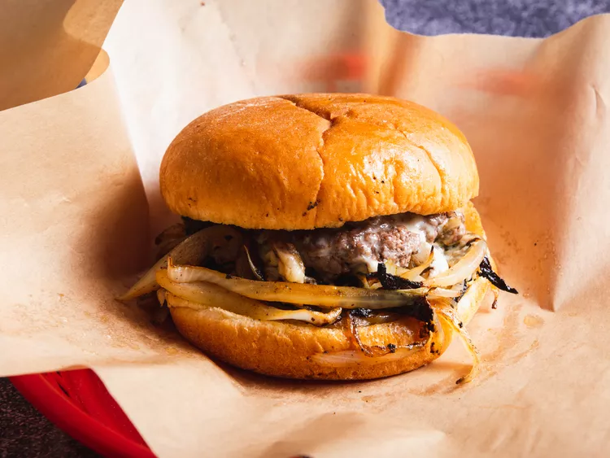

Oaklahoma syle onion burger

Description
An Oklahoma classic, it's a slider in style, but with way more onions, which help the thin patties of beef cook up extra juicy and flavorful.t
Ingredients
- 2lbs/1kg boneless beef short ribs
- 4 small white onions, shaved
- Salt
- Ground black pepper
- Brioche buns, toasted
- American cheese
Instructions
- Cut short ribs into chunks (about 1.5”/4cm). Place on plate or tray and freeze for 15min.
- Put 15-minute frozen chunks into a food processor or meat grinder. If using a food processor, in at least 2 batches, pulse meat until it has a loose ground beef texture.
- Measure patties into 2.5oz/70g pieces. Roll into a ball and work slightly until beef sticks together.
- Place between pieces of parchment then flatten into 5-6”/12-15cm in diameter, making sure to flatten patty so that it’s even thinner around the edges. When finished, refrigerate patties until you’re ready to cook them.
- Peel and cut poles off onions then slice into the thinnest rings possible. I like to use a mandolin.
- Preheat the largest nonstick pan or cast iron that you have over med-high. I use a 14” pan which can cook 4 patties at once. A griddle will work well if you have one. Place patties in the pan and hit them with a pinch salt and pepper, then about 1/2c of shaved onions onto each patty. Press each patty down for at least 10 seconds. When bottom side of patties has gotten brown and caramelized, flip to side 2, onion side down. Cook for about another 20 seconds before adding a slide of cheese. On half of the patties, place the bottom (pre-toasted) burger bun and the top burger bun directly on top of the bottom bun to steam and warm while patties finish cooking. Total cook time on the burgers should only be about 2-2.5 mins.
- To assemble, remove top buns. Flip patties with bottom buns over, bun side down. Onions will be facing up. Stack one of the patties without the bun on top of the onions (onions down, cheese up). Top with top bun.